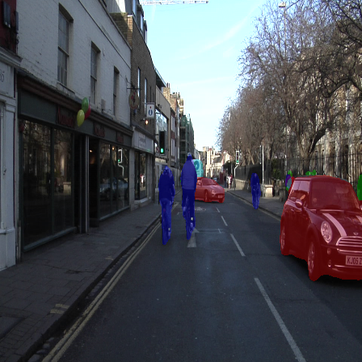
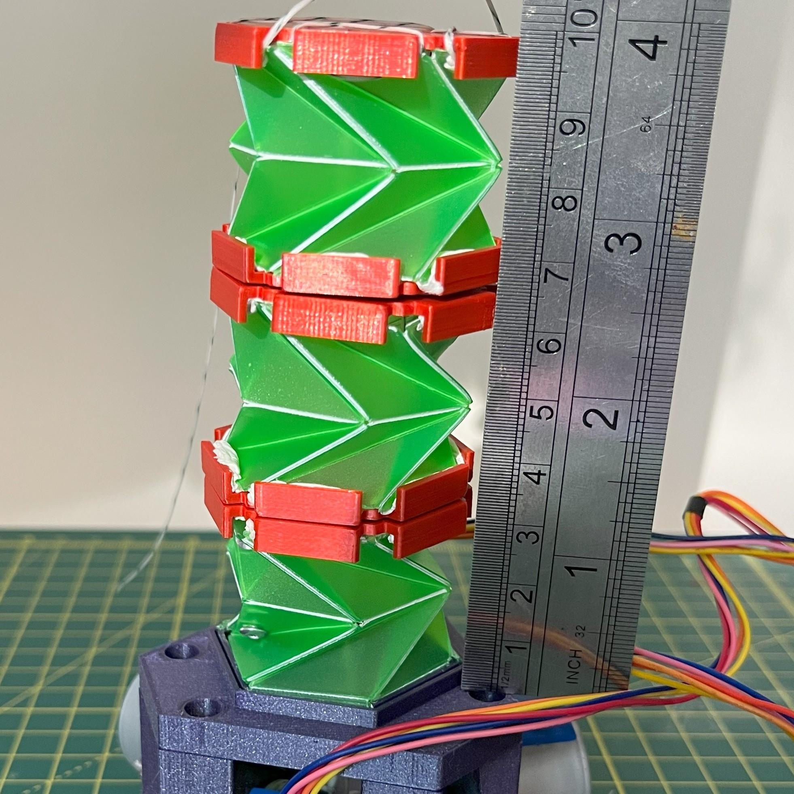
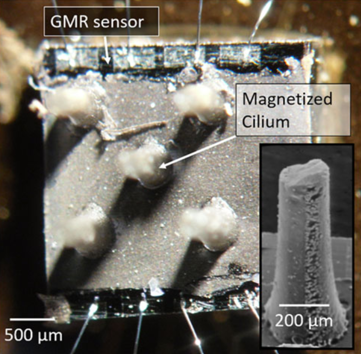

About me
Hi, my name is Ivo. I am pursuing my Robotics and AI MSc at UCL, where I focus on developing intelligent systems that fuse hardware innovation with machine learning. My current research explores tactile perception in robotics, aiming to enable robots to recognize objects and infer their properties through touch-driven deep learning models. I’m passionate about computer vision, robot localisation, and motion planning in the context of autonomous systems.
Projects

Deep Learning Image Classification
Hybrid bounding box prediction and classification using the YoloV1 and UNet architectures

Origami Actuation within Soft Robotics
Literature review and prototype for state of the art origami structures and actuation methods within the field of soft robotics

Dissertation: Tactile Robotics
Exploration of tactile sensing modalities and object property detection in robotics through deep learning methods.